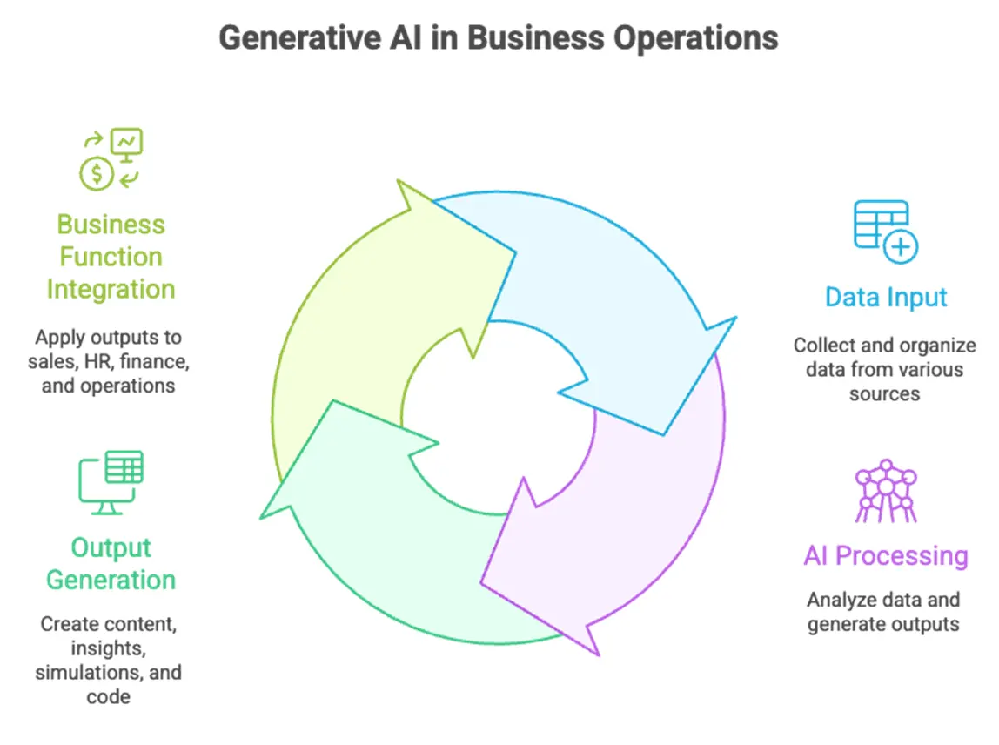
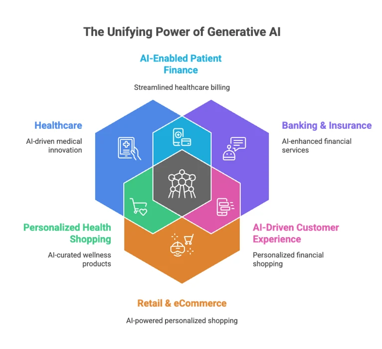

Generative AI in Business
Use Cases, Benefits, Risks & Tools
For years, innovations like AlphaGo or self-driving cars felt exciting but distant, mostly invisible to everyday business operations.
The idea of Artificial Intelligence (AI) made us believe in those possibilities somewhere far off in the future. Today, all of that has changed, especially with generative AI.
Generative AI is interactive, accessible, and capable of directly reshaping how organizations work. Way apart from traditional AI in every aspect.
With this, businesses today are being forced to adapt faster than ever. Leaders who embrace generative AI can unlock operational efficiency, creative augmentation, and automation at scale. Those who hesitate risk falling behind in an increasingly AI-first world.


In this blog, we’ll cover everything you need to know about generative AI in business: what it is, how it works, the technologies required to scale it, practical use cases by function and industry, potential risks, and strategic best practices for adoption.
With generative AI in the picture, suddenly, AI wasn’t something you observed. It was something you could use. With tools that draft, design, summarize, analyze, and even code, Generative AI has moved from the periphery of innovation to the center of business transformation.
By the end, you’ll have a clear understanding of how to integrate generative AI into your operations, harness its benefits responsibly, and prepare your organization for the next wave of AI-driven transformation.
Key Highlights
- Generative AI in business is reinventing operations & strategy. Helps automate workflows and drives innovation across business functions.
- Two core uses:
- Operational: Boosts efficiency through automation and content generation.
- Strategic: Enhances decision-making, R&D, and customer experience.
- Tech backbone: Cloud infrastructure, LLMs (GPT, Claude, Gemini), APIs, vector databases, GPUs, and orchestration tools.
- Governance: MLOps, data quality, and safety tuning ensure reliability and compliance.
- Use cases: Healthcare (diagnostics), Finance (fraud detection), Retail (personalization).
- Risks: Bias, data leakage, hallucinations, and IP issues, manageable with oversight.
- Adoption: Start small, measure value, scale responsibly.
What is Generative AI in Business Operations?

Stop thinking of generative AI as just a “tech experiment.” In business operations, it’s a productivity and innovation engine.
Generative AI basically refers to AI systems capable of creating new content, text, images, code, audio, and more based on patterns learned from massive datasets. But in business operations, it’s less about creativity for creativity’s sake and more about productivity, precision, and scale.
When embedded into daily workflows, gen AI acts as a co-pilot for knowledge work. It can draft reports, generate insights from structured and unstructured data, and simulate business scenarios that would otherwise take hours or days of human effort.
However, not all of its uses serve the same purpose. Broadly, they fall into two categories: Operational and Strategic.
Operational vs Strategic Uses of Gen AI in Business
Not all AI applications are created equal. Understanding where generative AI fits in your organization starts with distinguishing operational from strategic uses:
Operational Uses
These are day-to-day processes where gen AI accelerates execution and reduces manual effort:
- AI-generated reports: Automatically summarize sales, finance, or performance data.
- Customer service flows: Power chatbots that handle inquiries, troubleshoot issues, or generate personalized responses.
- Document drafting & approvals: Generate contracts, policies, or email drafts in minutes.
Strategic Uses
Here, gen AI helps guide decision-making and innovation:
- Simulations: Model “what-if” scenarios for financial forecasting, supply chain planning, or market testing.
- Idea generation & prototyping: Rapidly explore product concepts, marketing campaigns, or R&D designs.
- Customer insights & sentiment analysis: Analyze massive datasets to uncover trends, preferences, and risks.
Pro Tip:
Treat operational and strategic applications as two sides of the same coin. Start with operational wins to prove value, then expand to strategic projects that can drive long-term differentiation.
Core Technologies Powering Large-Scale Generative AI in Business
Generative AI doesn’t run on ambition alone. Behind every AI-driven workflow is a stack of technologies that ensure scale, reliability, and intelligence. Without the right infrastructure and generative AI toolset, even the most powerful models will underperform or introduce risk.
1. Cloud Infrastructure
Platforms like AWS, Microsoft Azure, and Google Cloud Platform (GCP) form the foundation for training and deploying large-scale AI models.
Cloud infrastructure provides businesses with the computational horsepower and flexibility required to operate AI at scale. All this without the prohibitive cost of maintaining on-premise hardware.
They provide:
- Elastic computing for scaling workloads dynamically
- Data storage and management capabilities for structured and unstructured data
- Security and compliance frameworks to ensure responsible AI use across regulated industries
2. Foundational Models
Large Language Models (LLMs) such as GPT, Claude, Gemini, and Llama are the engines behind Generative AI’s intelligence.
These foundational models act as the “engine” of your AI initiatives. They’re pre-trained on massive datasets but require fine-tuning for business-specific applications.
For enterprises, the choice between open-source and proprietary LLMs depends on use case, data sensitivity, and governance needs.
Nevertheless, these foundational models enable them to:
- Understand natural language and context
- Generate human-like text, summaries, or code
- Adapt to specialized business use cases through fine-tuning or retrieval-augmented generation (RAG)
3. APIs, Databases, and Orchestration Tools
Without this technology stack, generative AI cannot progress from proof of concept to full-scale operational impact.
When planning large-scale AI adoption, focus on both compute capacity and integration architecture. Having powerful models is useless if they can’t connect to your business systems efficiently.
Gen AI workflows rely on a supporting ecosystem of tools:
- APIs: Connect models with enterprise applications like CRM, ERP, or BI platforms.
- Vector Databases: Efficiently store embeddings for semantic search, recommendation systems, and retrieval-augmented generation (RAG).
- GPUs & Accelerators: Provide the raw compute needed for model training and inference at scale.
- Orchestration Tools (LangChain, RAG): Automate and chain complex AI workflows, enabling end-to-end business process integration.
4. Orchestration Tools and Frameworks
Frameworks such as LangChain, LlamaIndex, and Retrieval-Augmented Generation (RAG) architectures enable developers to combine data sources, manage prompts, and build AI workflows with precision and traceability. These supporting tools help enterprises move from experimentation to production safely and efficiently.
Wondering if your tech stack is prepared for GenAI?

Role of MLOps, Data Governance & Model Fine-Tuning
Building a Generative AI model is only the first step. Running it reliably, securely, and ethically across the enterprise is where the real challenge—and opportunity—lies. This is where MLOps, data governance, and model fine-tuning form the operational backbone of scalable AI.
1. Model Lifecycle Management with MLOps
Machine Learning Operations (MLOps) applies DevOps principles to the AI lifecycle, covering everything from model training and deployment to monitoring and continuous improvement.
For enterprises, MLOps ensures:
- Version control and traceability across data, models, and experiments
- Continuous monitoring of model performance and drift detection
- Automated retraining pipelines to maintain relevance as business data evolves
2. Enterprise-Grade Data Quality and Access Control
Generative AI is only as good as the data it’s built on. Strong data governance ensures that AI outputs are trustworthy, consistent, and aligned with enterprise integrity standards.
Enterprises must implement rigorous data governance frameworks to ensure:
- High-quality, curated datasets that reflect real-world business contexts.
- Controlled access to sensitive or proprietary information via encryption and role-based permissions.
- Auditability and compliance with industry regulations (GDPR, HIPAA, SOC 2, etc.).
3. Why Alignment and Safety Tuning are Non-Negotiable
As Generative AI models interact directly with users and business-critical data, alignment and safety tuning are essential. Without these safeguards, even high-performing models risk producing inaccurate or harmful responses, undermining trust and legal compliance.
This involves:
- Instruction tuning to make models follow enterprise-specific policies and tone.
- Reinforcement Learning with Human Feedback (RLHF) to reduce hallucinations and bias.
- Guardrails and content filters that prevent unethical or non-compliant outputs.
How Can Generative AI Models Be Used in Business?
Stop thinking of generative AI as a novelty or research project. In today’s enterprise landscape, it’s a versatile tool that touches every function, from operational efficiency to strategic innovation. The question isn’t whether to use it; it’s how to apply it effectively across different business domains.
| Aspect | Functional Use Cases | Strategic Use Cases |
|---|---|---|
| Primary Goal | Improve operational efficiency and productivity | Drive innovation, enhance decision-making, and create long-term business value |
| Focus Area | Task automation, process optimization, and cost reduction | Competitive differentiation, new business models, and strategic insights |
| Time Horizon | Short-term, measurable gains | Long-term, transformative outcomes |
| Examples | Automating report generation, content creation, data entry, customer support | Designing new products, optimizing supply chain strategy, enabling data-driven decisions |
| Users/Stakeholders | Operational teams (marketing, HR, finance, IT) | Leadership, strategy, and innovation teams |
| Technology Integration | Embedded in day-to-day workflows and tools | Integrated with enterprise systems, analytics, and governance frameworks |
| Success Metrics | Time saved, error reduction, cost efficiency | Market growth, innovation rate, decision quality, strategic agility |
| Dependency | Process maturity and workflow automation | Cross-functional data integration and executive alignment |
Functional Uses: Sales, Marketing, HR, and Finance
Generative AI excels at automating repetitive or high-volume tasks, freeing teams to focus on higher-value work:
- Sales & Marketing: Automatically generate personalized email campaigns, product descriptions, ad copy, and customer engagement content.
- HR & Talent Management: Draft job descriptions, onboarding materials, performance reviews, and employee communications at scale.
- Finance & Accounting: Produce financial summaries, forecasts, and compliance reports quickly and accurately.
Pro Tip:
Start by identifying tasks with high repetition and low-risk impact, this is where generative AI delivers the fastest ROI.
Strategic Uses: Innovation, R&D, and Customer Experience
Beyond day-to-day tasks, generative AI powers strategic initiatives that drive competitive advantage:
- Prototyping & Simulation: Quickly generate product designs, test business scenarios, or simulate market reactions before committing resources.
- Sentiment & Trend Analysis: Analyze customer feedback, social media, and market data to identify opportunities or risks in near real-time.
- Customer Experience Enhancement: Generate personalized recommendations, responses, or interactive experiences that improve engagement and loyalty.
Pro Tip:
Start small but think big. Pilot generative AI in one strategic area (like design simulation or customer insight generation), then scale the learnings across R&D, marketing, and CX. This ensures early wins while building the foundation for enterprise-wide innovation.
Generative AI Use Cases in Business Across Industries

Generative AI isn’t just a theoretical advantage, it’s already transforming industries. From healthcare to retail, businesses are leveraging these models to improve outcomes, cut costs, and enhance customer experiences.
Generative AI in Healthcare
Healthcare organizations are adopting generative AI to augment clinical and operational workflows:
- Patient Communication: AI-powered chatbots provide instant responses to common inquiries, appointment scheduling, and post-care instructions.
- Diagnostics Support: Generate preliminary diagnostic suggestions or highlight anomalies in imaging and lab results for clinician review.
- Synthetic Data Generation: Create anonymized patient data for research, training AI models, or running simulations without compromising privacy.
Generative AI in Banking & Insurance
Financial services are using generative AI to streamline operations and enhance decision-making:
- Underwriting Automation: Automatically analyze customer profiles and historical data to expedite approvals.
- Fraud Detection: Detect patterns and anomalies in real-time, reducing false positives while improving accuracy.
- Customer Advisory Bots: Deliver personalized advice on investments, insurance plans, and risk management.
Generative AI in Retail and eCommerce
Retailers and eCommerce platforms are harnessing generative AI to improve sales, personalization, and supply chain efficiency:
- AI-Generated Product Descriptions: Quickly produce compelling, SEO-optimized content for thousands of SKUs.
- Inventory Planning: Forecast demand and optimize stock allocation using AI-generated predictive models.
- Hyperpersonalization: Tailor promotions, recommendations, and marketing messages to individual customers at scale.
If you are confused about which use case suits your business best, let’s find your starting point.

Risks of Generative AI in Business: What Leaders Should Know
Generative AI offers enormous potential, but with great power comes great responsibility. Without proper governance, oversight, and controls, these models can introduce ethical, operational, and compliance risks that may outweigh their benefits.
Governance, Bias, and Ethical Use
Generative AI models can reflect and amplify biases present in their training data. If left unchecked, this can result in:
- Model Bias: Producing outputs that unfairly favor or disadvantage certain groups.
- Data Leakage: Accidental exposure of sensitive or proprietary information in generated outputs.
- Hallucinations: AI confidently produces false or misleading information that can misinform decisions.
Pro Tip:
Embed ethics and governance frameworks early. Implement auditing pipelines, bias detection tools, and human-in-the-loop reviews to catch issues before outputs reach business-critical processes.
Operational Risks & Compliance Concerns
Generative AI can also create operational vulnerabilities:
- Misuse in Decision-Making: Decisions based solely on AI outputs without human validation can introduce errors or legal liabilities.
- Lack of Explainability: Many generative models operate as black boxes, making it hard to justify outputs to stakeholders or regulators.
- Intellectual Property (IP) Risks: AI-generated content may inadvertently replicate copyrighted material or violate licensing agreements.
Pro Tip:
Align AI initiatives with your organization’s risk management and compliance frameworks. Incorporate logging, traceability, and legal review processes to mitigate exposure.
Generative AI isn’t inherently risky, but unchecked adoption is a recipe for operational, legal, and reputational challenges. With the right governance and oversight, businesses can reap the rewards while staying safe.
Best Practices for Implementing Generative AI in Business Operations
Generative AI can only be transformative if it’s deployed thoughtfully and strategically. Leaders who rush into adoption without structure often face operational friction, wasted resources, or regulatory issues.
1. Pilot → Evaluate → Scale Approach
Start small, prove value, and scale strategically:
- Pilot: Begin with a low-risk, high-impact use case, like automating report generation or customer support responses.
- Evaluate: Measure accuracy, efficiency gains, user adoption, and potential risks. Refine models and workflows based on feedback.
- Scale: Once validated, expand to other business functions or strategic initiatives, ensuring integration with enterprise systems.
Pro Tip:
A phased approach minimizes disruption while building internal confidence in AI capabilities.
2. Cross-Functional AI Governance Committees
Generative AI affects multiple dimensions, including technology, operations, ethics, and compliance. This makes forming a cross-functional governance committee imperative. For responsible adoption:
- Align AI projects with business goals and KPIs.
- Monitor risks, biases, and regulatory compliance.
- Establish decision-making frameworks for human-in-the-loop reviews and approvals.
3. Partnering with Cloud & AI Vendors for Enterprise Integration
Generative AI adoption often requires specialized infrastructure, models, and orchestration tools. Partnering with cloud providers and AI vendors helps:
- Accelerate deployment with enterprise-ready platforms like Azure, AWS, or GCP.
- Ensure security, compliance, and scalability from day one.
- Leverage pre-built models and APIs while maintaining control over data and customizations.
Pro Tip:
Treat vendors as strategic partners, not just suppliers; they can help navigate complex AI operations, governance, and scaling challenges.
Turn Experiments into an Enterprise Gen AI Program.

Emerging Frontier of Generative AI in Business
Generative AI in business is actually becoming a strategic differentiator. The technology is evolving rapidly, and forward-thinking businesses are exploring new frontiers that go beyond traditional applications.
Evolution from Copilots to Autonomous Agents
Early implementations often positioned AI as a “copilot,” assisting humans in tasks like drafting emails or generating reports. Today, we are seeing the rise of autonomous agents:
- AI systems capable of executing complex workflows end-to-end with minimal human intervention.
- Examples include automated customer support handling multi-step queries or financial AI agents managing trading simulations.
- These agents reduce friction, accelerate processes, and free teams to focus on high-value decision-making.
AI-First vs AI-Assisted Business Models
Organizations are beginning to differentiate between AI-assisted and AI-first approaches:
- AI-assisted: AI augments human decision-making but humans remain in control. Ideal for iterative adoption or regulated environments.
- AI-first: AI drives core operations, from product design to personalized customer interactions. Companies adopting this model can achieve faster scaling, lower operational costs, and greater innovation velocity.
The Rise of Domain-Specific Generative Models
While general-purpose LLMs are powerful, domain-specific models are becoming a game-changer:
- Trained on industry-specific data, these models offer higher accuracy, relevance, and compliance for sectors like healthcare, finance, and legal.
- They reduce hallucinations and bias by focusing on domain knowledge, improving decision reliability.
- Examples include clinical AI models for diagnostics, legal AI for contract review, and financial AI for risk assessment.
Pro Tip:
Stay ahead by evaluating whether general-purpose or domain-specific models best suit your business objectives. Many enterprises adopt a hybrid strategy, leveraging both for maximum flexibility and precision.
Prepare Your Business for Generative AI with Aegis Softtech
Stop thinking of generative AI as a “nice-to-have” technology. Knowing about it isn’t enough. Success comes from execution, integration, and governance. Businesses that delay adoption risk falling behind competitors who are already leveraging AI to streamline operations, innovate products, and enhance customer experiences.
Key Takeaways for Readiness
- Operational + Strategic Impact: Generative AI can automate routine tasks and inform strategic decision-making, but only if applied thoughtfully across both dimensions.
- Technology Stack: Cloud infrastructure, LLMs, APIs, GPUs, and orchestration tools form the backbone of scalable, enterprise-grade AI.
- Governance & Safety: MLOps, data quality, alignment, and safety tuning are non-negotiable to mitigate bias, hallucinations, and operational risk.
- Phased Adoption: Pilot → Evaluate → Scale ensures measurable ROI and smooth integration into workflows.
Take the Next Step With Us
Generative AI has moved past the hype phase. It’s now a defining force in business transformation. From automating workflows to unlocking new revenue streams, its potential is immense.
But success won’t come from awareness alone. It demands action, experimentation, and responsible execution.
Most organizations are still in the early stages, experimenting with pilots or isolated use cases. The real advantage lies with those who move from exploration to integration, embedding gen AI into their core operations, customer experience, and innovation strategy.
Leaders must ask the right questions:
- Where can generative AI create measurable business value?
- What governance and safety measures are in place?
- How can teams be trained to collaborate effectively with AI systems?
The clock is ticking. Competitors are already leveraging generative models to cut turnaround times, boost decision velocity, and scale personalization. The organizations that act now will define the next decade of digital leadership.
Implementing generative AI at scale is complex, but you don’t have to do it alone. At Aegis Softtech, we help enterprises navigate this transformation responsibly. We help design AI adoption roadmaps that balance innovation with compliance, security, and business impact. From model integration to workflow automation, we build scalable, trustworthy GenAI solutions tailored to your industry.
Now is the time to turn potential into performance.
Book a FREE strategy call today to explore how generative AI can reshape your business for what’s next
Frequently Asked Questions
Generative AI in business strategy refers to the use of AI models to drive decision-making, innovation, and operational efficiency. It goes beyond automation, enabling organizations to generate insights, simulate scenarios, and create content that informs strategic choices across functions like R&D, marketing, and customer experience.
The primary goal of generative AI is to augment human capabilities by producing high-quality outputs, text, images, code, or simulations, at scale. In business, this translates into faster operations, improved productivity, enhanced customer experiences, and more informed decision-making.
Some of the most widely adopted generative AI tools include GPT (OpenAI), Claude (Anthropic), and Gemini (Google DeepMind). The choice depends on your business needs, integration requirements, and domain specificity. Many enterprises also leverage APIs and platforms that allow seamless integration into existing workflows.
To implement large-scale generative AI for business, organizations need strong cloud infrastructure (AWS, Azure, GCP), foundational models (GPT, Claude), vector databases, GPUs, and orchestration tools like LangChain and RAG. Robust data governance, MLOps, and model fine-tuning frameworks are also essential for scalability and compliance.
Two major benefits of using generative AI in business operations are increased efficiency and enhanced innovation. It automates repetitive tasks and helps teams ideate, prototype, and strategize faster. However, leaders must also consider risks of generative AI in business, such as data bias and misuse.